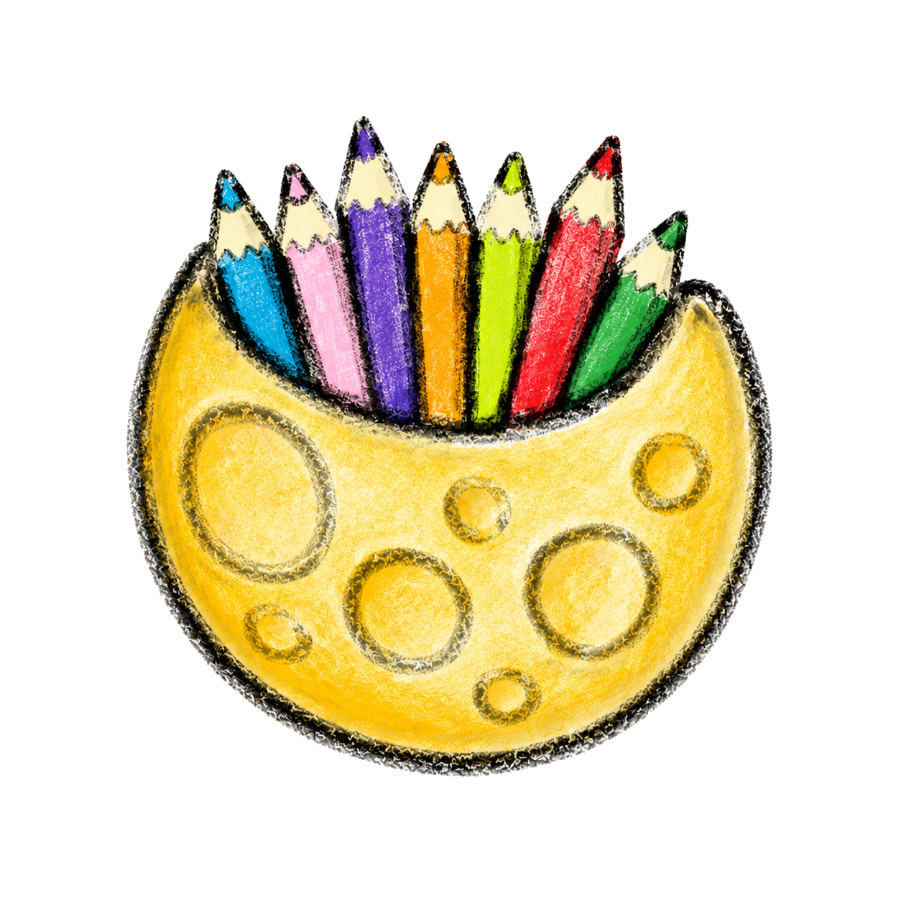

The boundary you kept
Even when explaining it would have been easier than protecting it.

Jigyasa Verse Chandra LokChandra Lok · The Becoming
Who are you when nobody is looking?
Some parts of us exist long before we can explain them. This is a place for the hidden dreams, private grief, quiet discipline and unnamed versions of ourselves that are still learning how to be seen.
Enter the darkBefore the light
“I was changing long before anyone could see that I had changed.”
The world often recognises transformation only after it becomes visible: after the achievement, the announcement, the finished work or the confident answer.
But becoming begins earlier than that. It begins in choices nobody applauds, questions nobody hears and nights when the only evidence of progress is that you chose not to give up.
Private becoming
These stories do not offer perfect endings. They are records of what it means to keep becoming when there is no audience, certainty or proof.
There was a period when almost everything I was building existed only inside my own mind. I could see where I wanted to go, but I could not yet show anyone a finished result. From the outside, it may have looked as though nothing was happening.
What people could not see were the hours of learning, beginning again, doubting myself and returning anyway. They saw the silence. I lived inside the effort.
It was difficult to trust work that had not produced visible proof. I sometimes wondered whether a dream counted if I was the only person who could see it.
Slowly, I learned that unseen effort is not unreal effort. Roots do not become meaningless because they grow beneath the soil. Some of the most important work of my life happened before there was anything impressive to point towards.
I became very good at answering quickly. “I’m fine” arrived before I had time to ask myself whether it was true. It protected other people from discomfort, and it protected me from having to explain feelings I did not yet understand.
I could continue working, speaking, laughing and completing what was expected of me. Because I remained functional, it was easy for others to assume that I was also okay.
But functioning and healing are not the same thing. Strength can sometimes become a hiding place. The more capable I appeared, the less permission I felt to admit that I was tired.
I did not need everybody to see beneath the costume. I needed to stop disappearing from myself. The first honest sentence was not a grand confession. It was simply: I am carrying more than I say.
There are dreams that are easy to share because they already sound sensible. Then there are dreams so large, strange or personal that saying them aloud can feel like placing something fragile into another person’s hands.
I had ideas that did not fit neatly inside one title. I wanted to learn, create, lead, explore and build. Sometimes people treated this as confusion. They wanted me to choose one box so they could understand me.
For a while, I mistook their inability to see my direction for evidence that I had no direction. I tried to make myself smaller and easier to explain.
Eventually, I understood that a life can have more than one horizon. Curiosity is not the absence of commitment. It can be the deepest commitment of all: the refusal to stop meeting the person you are becoming.
Motivation was loud when it arrived. It gave me visions of the future and made difficult things feel briefly possible. But motivation did not stay. It never promised to.
The quieter part came afterwards: waking up, practising, studying, training or creating when the result was still far away. There was no dramatic music and no sudden certainty. There was only the next decision.
I used to think discipline would feel powerful. Often, it felt ordinary. It looked like small repetitions performed by a person who was still afraid of failing.
Over time, those repetitions became a form of trust. Each return told me: I have not abandoned you. Even when nobody else knew what I was working towards, I knew I had returned.
For a long time, I measured my existence through recognition. If somebody noticed my effort, I believed it mattered. If they did not, I questioned whether I mattered either.
But the unseen self had been present through everything. It was there when I began again without announcing it. It was there when I chose kindness without receiving it back. It was there when I protected a small hope from a world that demanded proof.
This self was not waiting to be invented. It was waiting to be acknowledged.
The new moon does not stop existing when it disappears from our view. It remains whole, moving quietly through the dark. Perhaps we do too. Perhaps being unseen is sometimes a phase, not an identity.
Evidence of becoming
Not every form of progress can be photographed, announced or placed on a timeline.
Even when explaining it would have been easier than protecting it.
After missing a day, a week or a season of your life.
Because growing sometimes begins by refusing an inherited answer.
Even after experience gave you every reason to become hard.
Without first proving that you had earned the right to need it.
Before it was strong enough to survive everybody’s opinion.
The mirror
What part of you exists, even without recognition?
Do not answer for the version of you that performs for the world. Answer for the person who remains after the room becomes quiet.
Phase One · Complete
The new moon carries its whole shape in darkness. Nothing has disappeared. The light simply has not reached this side yet.
Continue to Phase Two · First Light